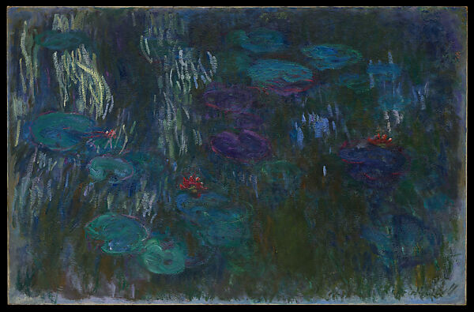
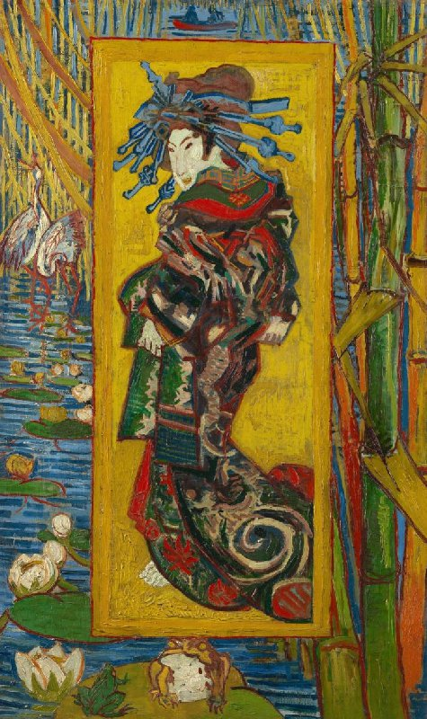
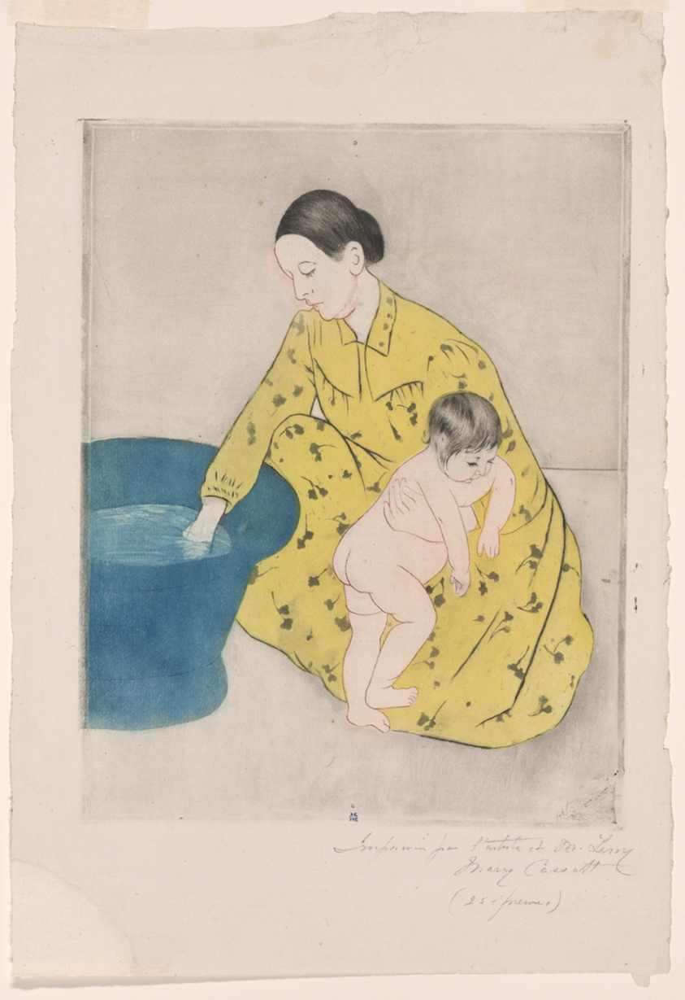
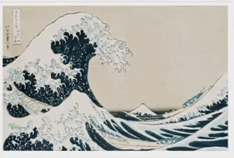
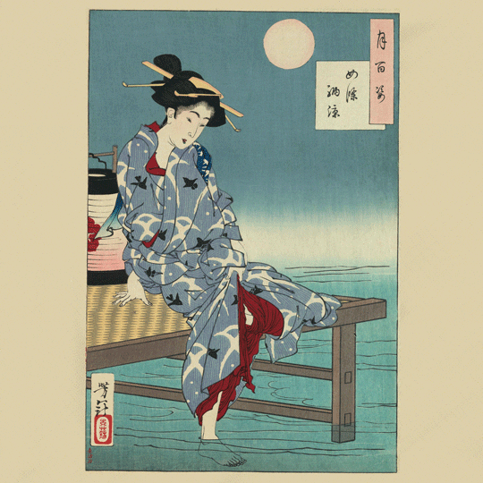
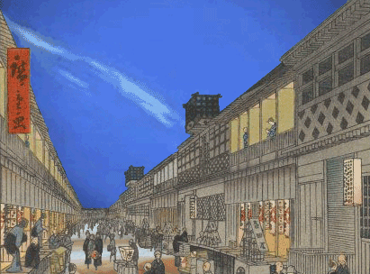
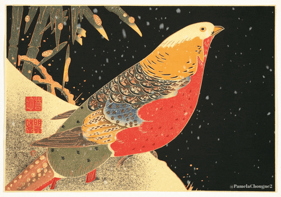

The Great Wave off Kanagawa
Katsushika Hokusai

Water Lilies
Claude Monet

The Courtesan
Vincent van Gogh

The Bath
Mary Cassatt
Home Page
Cross Cultural Influences
Japanese art inspired Western artists to try new styles and techniques. After Japan opened trade in the 1800s, Japanese woodblock prints spread through Europe. Artists like Monet and Van Gogh were influenced by the bold lines, flat colors, and unique compositions used in Japanese prints.




Featured Video
Katsushika Hokusai

Claude Monet

Vincent van Gogh

Mary Cassatt